Las series temporales constituyen uno de los pilares fundamentales del
análisis de datos estructurados. Su estudio permite no solo caracterizar
dinámicas en el tiempo, sino también poner a prueba teorías económicas y
financieras bajo evidencia empírica real.
De esta forma, surge este proyecto incial, con el que se pretende
evaluar la capacidad predictiva de modelos clásicos de series temporales
aplicados a retornos financieros del IBEX y de empresas representativas
(una por sector).
A partir de un EDA inicial, en el que se investigan aspectos como la
volatilidad, patrones estacionales y correlaciones respecto al índice de
referencia, se consigue tener una aproximación preliminar a la
estructura de los datos. Con esta base, se procede a contrastar mediante
modelos predictivos si existe alguna estructura temporal
aprovechable.
library(quantmod)
library(tidyquant)
library(dplyr)
library(lubridate)
library(tidyr)
library(ggplot2)
library(xts)
library(zoo)
library(moments)
library(ggpubr)
library(kableExtra)
library(gridExtra)
library(plotly)
library(knitr)
library(purrr)
library(forecast)
library(vars)
Los datos se extraen directamente desde la herramienta financiera Yahoo
Finance. Comprenden la ventana temporal desde enero de 2016 hasta
diciembre de 2024. La frecuencia temporal escogida es mensual para
correer menos riesgos de encontrar valores pérdidos dentro de cada
dataframe.
#RAW DATA
ibex_mensual <- getSymbols("^IBEX", src = "yahoo", from = "2016-01-01", to = "2025-01-01",
periodicity = "monthly",auto.assign = F)
san_mc <- getSymbols("SAN.MC", src = "yahoo", from = "2016-01-01", to = "2025-01-01",
periodicity = "monthly",auto.assign = F)
itx_mc <- getSymbols("ITX.MC", src = "yahoo", from = "2016-01-01", to = "2025-01-01",
periodicity = "monthly",auto.assign = F)
ibe_mc <- getSymbols("IBE.MC", src = "yahoo", from = "2016-01-01", to = "2025-01-01",
periodicity = "monthly",auto.assign = F)
grf_mc <- getSymbols("GRF.MC", src = "yahoo", from = "2016-01-01", to = "2025-01-01",
periodicity = "monthly", auto.assign = FALSE)
fer_mc <- getSymbols("FER.MC", src = "yahoo", from = "2016-01-01", to = "2025-01-01",
periodicity = "monthly",auto.assign = F)
tef_mc <- getSymbols("TEF.MC", src = "yahoo", from = "2016-01-01", to = "2025-01-01",
periodicity = "monthly",auto.assign = F)#CLEAN DATA
datasets <- list(ibex_mensual, san_mc, itx_mc, ibe_mc, grf_mc, fer_mc, tef_mc)
nombres <- c("ibex_mensual", "san_mc", "itx_mc", "ibe_mc", "grf_mc", "fer_mc", "tef_mc")
for (i in seq_along(datasets)) {
assign(nombres[i], datasets[[i]][, c(4,6)])
}
Al no tener ni NAs en ningun df y poseer todos las mismas dimensiones,
así como la misma clase incial de serie temporal, se puede pasar ya a la
siguiente etapa.
En el contexto de los datos financieros, aplicar logaritmos a los
rendimientos es una condición casi necesaria pero no suficiente para
trabajar con series financieras bajo los supuestos de normalidad de
muchos modelos. Se hace con la intención de acercar la distribución a la
normalidad y así es más probable acercarse a una mejora de las
propiedades de la serie temporal.Asimismo, estos datos serian la versión
con features sobre la que se trabajaría a partir de ahora.
calcular_retornos_log <- function(df) {
df <- df[order(index(df)), ]
col_adjusted <- grep("Adjusted", colnames(df), value = TRUE, ignore.case = TRUE)
if (length(col_adjusted) == 0) {
stop("No se encontró ninguna columna 'Adjusted' en el dataframe")
}
if (length(col_adjusted) > 1) {
warning("Múltiples columnas 'Adjusted' encontradas. Usando la primera: ", col_adjusted[1])
col_adjusted <- col_adjusted[1]}
retornos <- diff(log(df[, col_adjusted])) * 100
nuevo_nombre <- paste0("log_return_", col_adjusted)
colnames(retornos) <- nuevo_nombre
resultado <- merge(df, retornos)
return(resultado)}
for (i in seq_along(datasets)) {
temp_df <- calcular_retornos_log(datasets[[i]])
assign(nombres[i], temp_df)}
Sin embargo, la aplicación de esta técnica no exime de comprobar la
distribución de la distribución de la serie tras la implementación, ya
que utilizar la técnica no implica que se consiga la transformación
total de la distribución automáticamente.
Para salir de dudas, se realiza una tabla sobre la prueba de
Shapiro-Wilk, de la simetría de la distribución y de la prueba de
Curtosis, acompañado de un gráfico, para revisar el estado de las
distribuciones de cada serie.
datasets <- list(ibex_mensual, san_mc, itx_mc, ibe_mc, grf_mc, fer_mc, tef_mc)
nombres <- c("IBEX", "SAN", "ITX", "IBE", "GRF", "FER", "TEF")
resultados_normalidad <- data.frame(
Activo = character(),
Shapiro_Wilk_p = numeric(),
Asimetria = numeric(),
Curtosis = numeric(),
stringsAsFactors = FALSE)
plots_qq <- list()
plots_densidad <- list()
for (i in seq_along(datasets)) {
df <- as.data.frame(datasets[[i]])
col_name <- grep("log_return", colnames(df), value = TRUE)
if (length(col_name) == 0) next
retornos_vector <- na.omit(df[[col_name]])
if (length(retornos_vector) < 3) next
shapiro_test <- shapiro.test(retornos_vector)
asimetria <- skewness(retornos_vector)
curtosis <- kurtosis(retornos_vector) - 3
resultados_normalidad <- rbind(resultados_normalidad, data.frame(
Activo = nombres[i],
Shapiro_Wilk_p = shapiro_test$p.value,
Asimetria = asimetria,
Curtosis = curtosis,
stringsAsFactors = FALSE
))
qq_values <- qqnorm(retornos_vector, plot.it = FALSE)
qq_data <- data.frame(
Theoretical = qq_values$x,
Sample = qq_values$y
)
plots_qq[[nombres[i]]] <- ggplot(qq_data, aes(x = Theoretical, y = Sample)) +
geom_point(alpha = 0.7, color = "steelblue", size = 2) +
geom_abline(intercept = mean(retornos_vector), slope = sd(retornos_vector),
color = "red", linetype = "dashed", linewidth = 1) +
labs(title = paste("Q-Q Plot -", nombres[i]),
x = "Cuantiles Teóricos", y = "Cuantiles Muestrales") +
theme_minimal()
densidad_data <- data.frame(Retornos = retornos_vector)
plots_densidad[[nombres[i]]] <- ggplot(densidad_data, aes(x = Retornos)) +
geom_histogram(aes(y = ..density..), bins = 25,
fill = "lightblue", alpha = 0.7) +
geom_density(color = "darkblue", linewidth = 1) +
stat_function(fun = dnorm,
args = list(mean = mean(retornos_vector), sd = sd(retornos_vector)),
color = "red", linetype = "dashed", linewidth = 1) +
labs(title = paste("Densidad -", nombres[i]),
x = "Retornos Logarítmicos", y = "Densidad") +
theme_minimal()
}
if (nrow(resultados_normalidad) > 0) {
resultados_normalidad$Shapiro_Wilk_p <- round(resultados_normalidad$Shapiro_Wilk_p, 6)
resultados_normalidad$Asimetria <- round(resultados_normalidad$Asimetria, 4)
resultados_normalidad$Curtosis <- round(resultados_normalidad$Curtosis, 4)
resultados_normalidad$Normalidad <- ifelse(resultados_normalidad$Shapiro_Wilk_p < 0.05,
"No Normal", "Normal")
}
if (length(plots_qq) > 0) {
grid.arrange(grobs = plots_qq, ncol = 3,
top = "Gráficos Q-Q de Normalidad - Retornos Logarítmicos")
}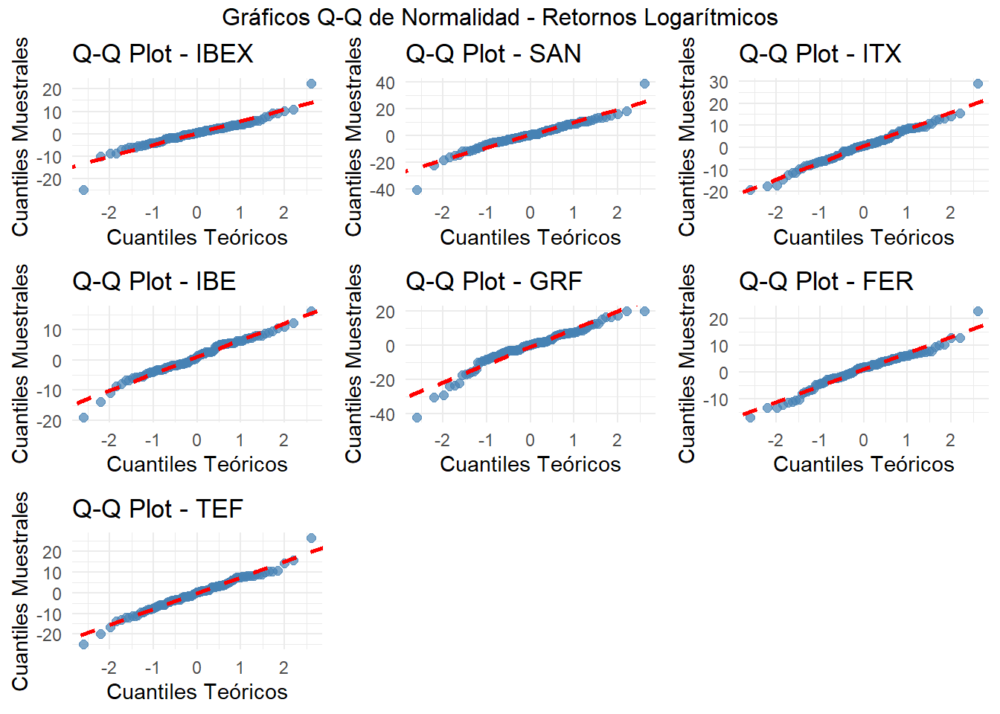
if (length(plots_densidad) > 0) {
grid.arrange(grobs = plots_densidad, ncol = 3,
top = "Distribuciones de Densidad - Retornos Logarítmicos")
}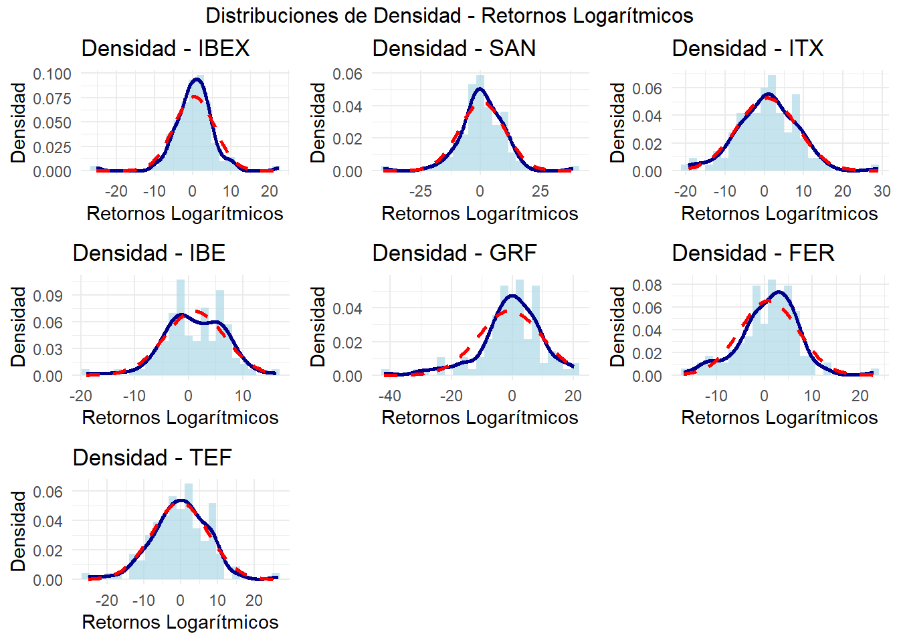
resultados_normalidad %>%
mutate(Shapiro_Wilk_p = format(Shapiro_Wilk_p, scientific = FALSE)) %>%
kable(align = "c",
caption = "Resultados de Tests de Normalidad - Retornos Logarítmicos",
col.names = c("Activo", "p-value Shapiro-Wilk", "Asimetría", "Curtosis", "Normalidad")) %>%
kable_styling(bootstrap_options = c("striped", "hover", "condensed"),
full_width = FALSE) %>%
row_spec(which(resultados_normalidad$Normalidad == "Normal"),
background = "lightblue") %>%
row_spec(which(resultados_normalidad$Normalidad == "No Normal"),
background = "lightcoral") %>%
column_spec(2, color = ifelse(resultados_normalidad$Shapiro_Wilk_p >= 0.05, "blue", "red")) %>%
column_spec(5, color = ifelse(resultados_normalidad$Normalidad == "Normal", "blue", "red"), bold = TRUE)| Activo | p-value Shapiro-Wilk | Asimetría | Curtosis | Normalidad |
|---|---|---|---|---|
| IBEX | 0.000003 | -0.3513 | 6.4054 | No Normal |
| SAN | 0.000121 | -0.2909 | 4.3154 | No Normal |
| ITX | 0.154541 | 0.1196 | 1.1677 | Normal |
| IBE | 0.108359 | -0.3646 | 0.9282 | Normal |
| GRF | 0.000103 | -1.0042 | 2.2212 | No Normal |
| FER | 0.011924 | -0.2010 | 1.3025 | No Normal |
| TEF | 0.189771 | -0.0940 | 1.2501 | Normal |
Con estos resultados, de las seis empresas consideradas, la mitad de
ellas siguen la distribución normal en sus retornos ajustados tras el
suavizado logarítmico, mientras que las restantes junto con el propio
mercado del IBEX 35 (benchmark), presentan el caso contrario.
Esto quiere decir que, para Santander, Grifols y Ferrovial, se puede
descartar la hipotésis nula de que la distribución en sus retornos
ajustados exista normalidad, por lo que se acepta la hipotésis
alternativa de no normalidad, debido a que el pvalue < 0.05 (nivel de
significancia común) ha demostrado que existe significancia estadistica,
luego la distibucion de no normalidad en los datos considerados no es un
producto del azar.
En el contexto de las finanzas, una curtosis alta (aproximadamente 2) se
suele relacionar en muchas ocasiones con altas volatilades, las cuales
se encuentran sus mayores valores en aquellas que siguen distribuciones
no normales, con Santander (4.3 muy alta), Grifols (2.2 alta ) y
Ferrovial (1.3 no alta).Esto parece mostrar una correlación, faltaría
comprobar la causalidad sobre esto.
Asimismo, todas las empresas tienen una asimetría negativa (mayor
probabilidad de tener pérdidas), salvo el caso de Inditex, que es la
única que presenta una tendencia a la rentabilidad positiva.
La evidencia de no normalidad en algunas de las distribuciones de
retornos requerirá la implementación de técnicas de modelado robustas,
para capturar adecuadamente las colas pesadas y asimetrías
identificadas.
Continuando con el precedente de la sección previa, se sigue haciendo
una breve pero valiosa exploración sobre los datos, para intentar
encontrar patrones subyacentes que sean interesantes con tal de poder
comprender la estructura de los datos y su evolución temporal.
De esta manera, es necesario cotejar el desarrollo que han tenido los
precios de cierre mensuales de cada empresa y del mercado.También es
necesario ver la evolución conjunta de los retornos de todos en un mismo
gráfico.
precios_list <- list()
for (i in seq_along(datasets)) {
df <- as.data.frame(datasets[[i]])
col_close <- grep("\\.Close$", colnames(df), value = TRUE)
if (length(col_close) > 0) {
temp_df <- data.frame(
Fecha = index(datasets[[i]]),
Precio = df[[col_close]],
Activo = nombres[i]
)
precios_list[[nombres[i]]] <- temp_df
}
}
precios_df <- do.call(rbind, precios_list)
plot_precios_final <- ggplot(precios_df, aes(x = Fecha, y = Precio)) +
geom_line(color = "steelblue", linewidth = 0.6) +
facet_wrap(~ Activo, scales = "free_y", ncol = 3) +
labs(
title = "Evolución de Precios de Cierre por Activo",
x = NULL,
y = "Precio (€)",
caption = "Período: 01-2016 hasta 12-2024") +
theme_minimal() +
theme(
plot.title = element_text(hjust = 0.5, face = "bold", size = 12),
axis.text.x = element_blank(),
axis.ticks.x = element_blank(),
strip.text = element_text(face = "bold", size = 9),
panel.spacing = unit(0.8, "lines"),
plot.margin = margin(5, 5, 25, 5, "pt"),
plot.caption = element_text(hjust = 0.5, color = "gray50",
face = "italic", size = 8) )
print(plot_precios_final)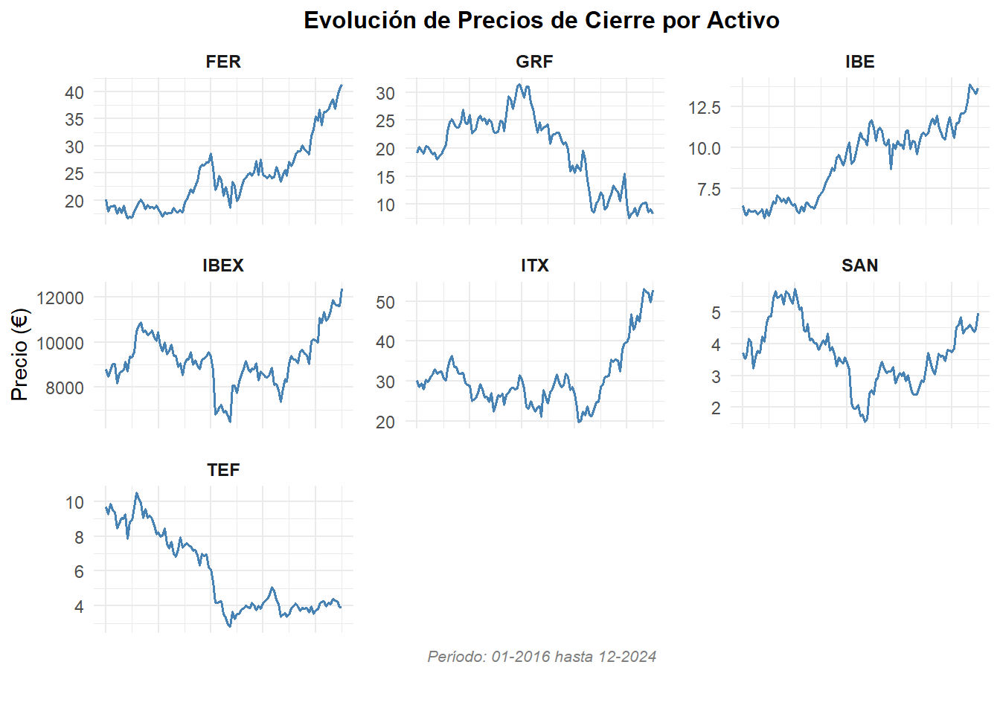
retornos_list <- list()
for (i in seq_along(datasets)) {
df <- as.data.frame(datasets[[i]])
col_retorno <- grep("log_return", colnames(df), value = TRUE)
if (length(col_retorno) > 0) {
temp_df <- data.frame(
Fecha = index(datasets[[i]]),
Retorno = df[[col_retorno]],
Activo = nombres[i]
)
retornos_list[[nombres[i]]] <- temp_df
}
}
retornos_df <- do.call(rbind, retornos_list)
retornos_df <- na.omit(retornos_df)
plotly_retornos <- retornos_df %>%
plot_ly() %>%
add_lines(data = filter(retornos_df, Activo == "IBEX"),
x = ~Fecha, y = ~Retorno,
name = "IBEX (benchmark)",
line = list(color = "black", width = 4, dash = "solid")) %>%
# Líneas del resto de activos
add_lines(data = filter(retornos_df, Activo != "IBEX"),
x = ~Fecha, y = ~Retorno,
color = ~Activo,
name = ~Activo,
line = list(width = 1.5)) %>%
layout(title = "Evolución de Retornos Logarítmicos",
xaxis = list(title = "Fecha"),
yaxis = list(title = "Retorno Logarítmico (%)"))
plotly_retornos
El análisis visual confirma los hallazgos estadísticos previos porque
todas las series presentan volatilidad persistente durante el período
completo, con intensidad variable entre activos.
Se observan una relación entre la volatilidad que se sincroniza con
crisis macroeconómicas, junto a eventos atípicos específicos (pandemia).
Los patrones de valores extremos y asimetría visible son consistentes
con la no normalidad, sesgos distribucionales y colas pesadas
identificadas en los tests estadísticos previos.
Se decide hacer una tabla que resuma los estadísticos descriptivos
imprescincibles, para entender el comportamiento que tienen las medidas
centrales y de dispersión.
tabla_stats <- data.frame()
for (i in seq_along(datasets)) {
df <- as.data.frame(datasets[[i]])
col_name <- grep("log_return", colnames(df), value = TRUE)
if (length(col_name) == 0) next
retornos <- na.omit(df[[col_name]])
if (length(retornos) < 3) next
stats <- tibble(
Activo = nombres[i],
Media = mean(retornos),
Mediana = median(retornos),
Min = min(retornos),
Max = max(retornos),
Desv.Std = sd(retornos),
Skewness = skewness(retornos),
)
tabla_stats <- bind_rows(tabla_stats, stats)
}
tabla_stats %>%
kable("html", digits = 3, caption = "Estadísticos descriptivos de retornos logarítmicos") %>%
kable_styling(full_width = FALSE, bootstrap_options = c("striped", "hover", "condensed"))| Activo | Media | Mediana | Min | Max | Desv.Std | Skewness |
|---|---|---|---|---|---|---|
| IBEX | 0.314 | 0.470 | -25.121 | 22.459 | 5.240 | -0.351 |
| SAN | 0.578 | 0.522 | -40.547 | 38.833 | 9.447 | -0.291 |
| ITX | 0.680 | 0.914 | -19.234 | 28.947 | 7.575 | 0.120 |
| IBE | 1.062 | 1.165 | -18.942 | 16.238 | 5.549 | -0.365 |
| GRF | -0.700 | 0.339 | -42.095 | 20.282 | 10.409 | -1.004 |
| FER | 0.915 | 1.724 | -16.835 | 22.749 | 6.081 | -0.201 |
| TEF | -0.238 | 0.148 | -25.021 | 26.488 | 7.639 | -0.094 |
Los resultados obtenidos eran esperables. En general, ya que cada activo
representa una experimentación de esto individualmente, hay una
tendencia a la dispersión y poca centralidad en los datos. Existen
diferencias significativas entre algunos activos entre media y
mediana.
Una caractericia común en todos los elementos son desviaciones típicas
altas (>5 puntos, aunque justificable por la naturaleza de la renta
variable como activo financiero). Se vuelve a confirmar que, en algunas
distribuciones de los datos, existen asimetrías inclinadas hacia valores
negativos (salvo el caso de Inditex). Finalmente, la media y la mediana
desvelan retornos modestos para la mayoría de activos e incluso
negativos para Grifols y Telefónica.
En relación a los descriptivos obtenidos, se implementa un análisis de
volatilidad móvil (12 meses), calculada mediante la desviación estándar
de los retornos, para evaluar la evolución del riesgo sistemático de
cada activo en el tiempo, comparándolo visualmente con el índice
bursátil IBEX 35 como benchmark.
datasets <- list(IBEX = ibex_mensual, SAN = san_mc, ITX = itx_mc,
IBE = ibe_mc, GRF = grf_mc, FER = fer_mc, TEF = tef_mc)
df_long <- purrr::map_dfr(names(datasets), function(activo) {
df_xts <- datasets[[activo]]
df <- data.frame(Fecha = index(df_xts), coredata(df_xts))
ret_col <- grep("log_return", colnames(df), value = TRUE)
if(length(ret_col) == 0) return(NULL)
# Usar nombres explícitos de paquetes
df <- df[, c("Fecha", ret_col[1])]
colnames(df) <- c("Fecha", "Retorno")
df$Activo <- activo
df <- df[!is.na(df$Retorno), ]
return(df)
})
df_rolling <- df_long %>%
dplyr::group_by(Activo) %>%
dplyr::arrange(Fecha) %>%
dplyr::mutate(RollingVol_12m = zoo::rollapply(Retorno, width = 12, FUN = sd, fill = NA, align = "right")) %>%
dplyr::ungroup()
plotly_volatilidad <- df_rolling %>%
plotly::plot_ly() %>%
plotly::add_lines(data = dplyr::filter(df_rolling, Activo == "IBEX"),
x = ~Fecha, y = ~RollingVol_12m,
name = "IBEX (benchmark)",
line = list(color = "black", width = 4, dash = "solid")) %>%
plotly::add_lines(data = dplyr::filter(df_rolling, Activo != "IBEX"),
x = ~Fecha, y = ~RollingVol_12m, color = ~Activo,
name = ~Activo,
line = list(width = 1.5)) %>%
plotly::layout(title = "Volatilidad Móvil 12 Meses de Retornos",
xaxis = list(title = "Fecha"),
yaxis = list(title = "Desv St"))
plotly_volatilidad
El gráfico revela como la volatilidad de la mayoría de activos se puede
agrupar en patrones cíclicos, dependiendo y coincidiendo las etapas con
eventos macroeconómicos diferenciados.
Previo al año 2020, no existen períodos prolongados con volatilidades
excesivamente altas, por lo que se podría considerar un período y
estable dentro del contexto concreto.
Con la llegada del episodio anómalo, existe una crecida generalizada,
donde el caso más llamativo es el de Santander, seguramente provocado
por la pérdida de confianza repentina dentro del sector
financiero.
Tras la finalización de este período, existe un retorno paulatino
generalizado hacia valores similares anteriores, salvo el caso de
Grifols, lo que quizás refleje una incertidumbres específica lantente en
el sector sanitario en el escenario internacional.
Para complementar lo anterior,se examina ahora la dinámica conjunta de
los activos a través de correlaciones con el mercado. Este enfoque
permite evaluar cómo varía la dependencia de cada activo respecto al
IBEX a lo largo del tiempo, identificando patrones de períodos de mayor
integración o divergencia con el benchmark.
rolling_correlation_matrix <- function(datasets, nombres, ventana = 12) {
retornos_lista <- lapply(datasets, function(df) {
col_name <- grep("log_return", colnames(df), value = TRUE)
if(length(col_name) > 0) return(df[, col_name])})
retornos_combinados <- do.call(merge.xts, retornos_lista)
colnames(retornos_combinados) <- nombres
resultados <- list()
n_activos <- length(nombres)
for(i in 1:(n_activos-1)) {
for(j in (i+1):n_activos) {
par_nombre <- paste(nombres[i], "vs", nombres[j])
resultados[[par_nombre]] <- rollapply(retornos_combinados[, c(i, j)],
width = ventana,
FUN = function(x) cor(x[,1], x[,2],
use = "pairwise.complete.obs"),
by.column = FALSE)}}
return(resultados)}
datasets <- list(ibex_mensual, san_mc, itx_mc, ibe_mc, grf_mc, fer_mc, tef_mc)
nombres <- c("IBEX", "SAN", "ITX", "IBE", "GRF", "FER", "TEF")
preparar_datos_correlacion <- function(datasets, nombres, ventana = 12) {
retornos_lista <- list()
for(i in seq_along(datasets)) {
df <- datasets[[i]]
col_name <- grep("log_return", colnames(df), value = TRUE)
if(length(col_name) > 0) {
retornos_lista[[nombres[i]]] <- df[, col_name]}}
retornos_combinados <- do.call(merge.xts, retornos_lista)
colnames(retornos_combinados) <- nombres
resultados <- data.frame()
for(activo in nombres[nombres != "IBEX"]) {
rolling_cor <- rollapply(retornos_combinados[, c("IBEX", activo)],
width = ventana,
FUN = function(x) {
cor(x[,1], x[,2], use = "pairwise.complete.obs")
},
by.column = FALSE,
align = "right")
temp_df <- data.frame(
Fecha = index(rolling_cor),
Correlacion = as.numeric(rolling_cor),
Activo = activo,
stringsAsFactors = FALSE)
resultados <- rbind(resultados, temp_df)}
return(resultados)
}
df_correlaciones <- preparar_datos_correlacion(datasets, nombres, ventana = 12)
plot_correlaciones <- plot_ly() %>%
add_lines(data = df_correlaciones,
x = ~Fecha, y = ~Correlacion, color = ~Activo,
line = list(width = 1.5)) %>%
add_lines(x = range(df_correlaciones$Fecha), y = c(1, 1),
name = "IBEX (benchmark)",
line = list(color = "black", width = 4, dash = "solid")) %>%
layout(title = "Correlación Rodante 12 Meses vs IBEX",
xaxis = list(title = "Fecha"),
yaxis = list(title = "Correlación", range = c(-1, 1)))
plot_correlaciones
El gráfico de correlaciones confirma los patrones cíclicos anteriores,
destacando el comportamiento de Grifols como el más llamativo al
mantener una correlación negativa persistente con el mercado durante la
pandemia.
Por lo general, el resto de activos muestran correlaciones positivas
incluso fuertes, considerando la inherente inestabilidad de los mercados
financieros con el índice IBEX, salvo en momentos específicos
probablemente asociados a crisis sectoriales que generan episodios
temporales de descorrelación.
Para finiquitar la exploración estructural de los datos, se realiza una
descomposición de los componentes, mediante la representación de una
serie con distribución normal (Inditext), otra con distribución no
normal (Santander) y el propio mercado del IBEX.
series_retornos <- list(
"IBEX" = ibex_mensual$log_return_IBEX.Adjusted,
"SAN" = san_mc$log_return_SAN.MC.Adjusted,
"ITX" = itx_mc$log_return_ITX.MC.Adjusted)
descomponer_serie <- function(serie_retornos, nombre) {
serie_limpia <- na.omit(serie_retornos)
serie_ts <- ts(serie_limpia, frequency = 12, start = c(2016, 1))
componentes <- decompose(serie_ts, type = "additive")
autoplot(componentes, main = paste("Descomposición ETL -", nombre))
}descomponer_serie(series_retornos$IBEX, "IBEX (No Normal)")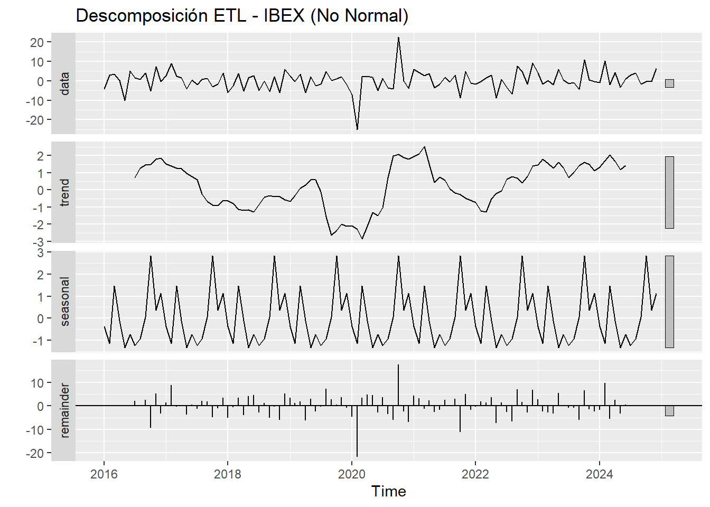
descomponer_serie(series_retornos$SAN, "Santander (No Normal)") 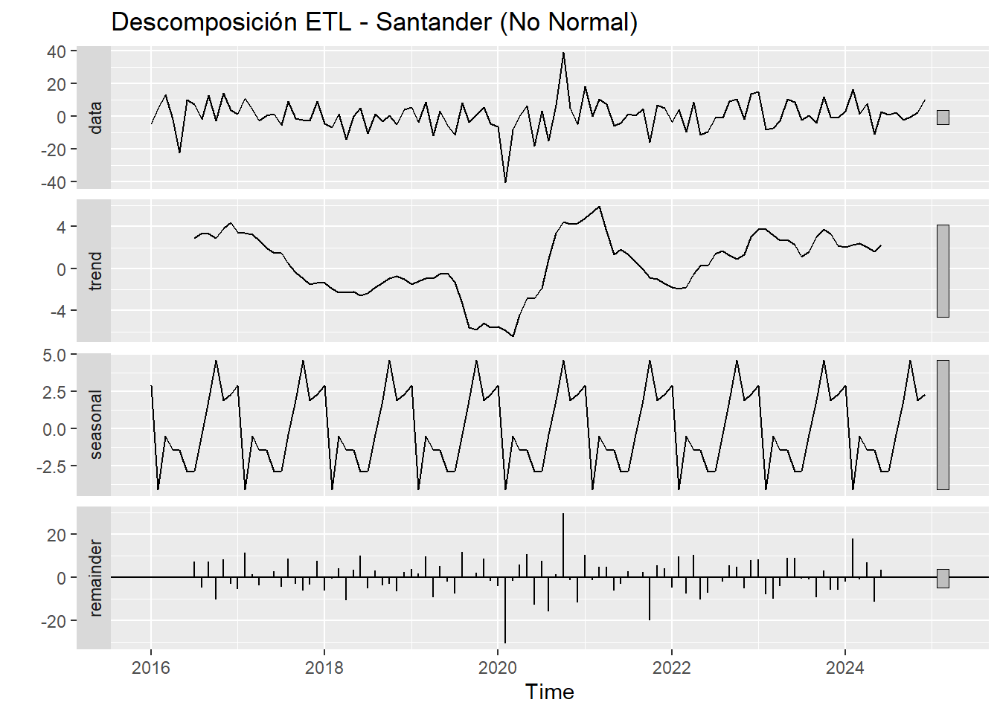
descomponer_serie(series_retornos$ITX, "Inditex (Normal)")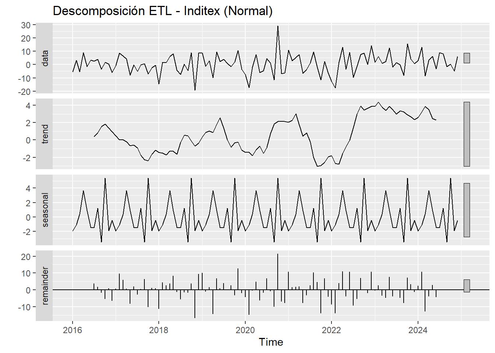
Las series analizadas presentan estacionariedad en media, evidenciada
por la ausencia de tendencia significativa a lo largo de las tres
series. Tampoco muestran estacionalidad relevante, lo que descarta
patrones cíclicos predecibles en los retornos mensuales.
El componente residual domina la variabilidad en los tres casos, siendo
notable su asimetría negativa en IBEX y Santander (agrupamiento hacia
pérdidas), mientras que Inditex exhibe una distribución más balanceada.
Esta diferencia en los residuos merecería análisis futuros sobre su
relación con la normalidad distribucional.
POr lo tanto bajo estas circunstancias estructurales abordadas en la
exploración, se podría llegar a confirmar que predecir retornos
específicos es algo inviable dado el predominio del componente
aleatorio. Sin embargo, la evolución temporal de la volatilidad y los
cambios en correlación sugieren que sí pueden modelarse los patrones de
riesgo aunque no su dirección específica.
Para evaluar la capacidad predictiva de los retornos financieros, se
implementan tres enfoques complementarios: un modelo naïve como punto de
referencia realista, ARIMA para capturar dinámicas univariantes, y VAR
para aprovechar las interdependencias detectadas entre activos. Esta
selección permite comparar ganancias predictivas incrementalmente, desde
la línea base hasta modelado multivariante.
En adición a esto, se opta por la estrategia de train/validation/test
set. De esta forma, se consigue mediante cada set, por un lado entrenar
el modelo, identificar si hay un sobreajuste de parámetros en el
entrenamiento y medir la calidad de las predicciones.
El modelo naïve utilizado se basa en el supuesto de persistencia
temporal, es decir, que el mejor predictor del próximo retorno es el
retorno inmediatamente anterior. Este enfoque, aunque simple, establece
una línea base realista contra la cual evaluar modelos más
sofisticados.
A continuación se crea una tabla que muestre los resultados del error
cuadrático medio (RMSE) y del error medio absoluto (MAE) tanto en el
train como en el validation set.
fecha_division_val <- as.Date("2022-01-01")
fecha_division_test <- as.Date("2024-01-01")
ajustar_naive <- function(serie_retornos, nombre_activo) {
serie_limpia <- na.omit(serie_retornos)
serie_ts <- ts(serie_limpia, frequency = 12, start = c(2016, 1))
train <- window(serie_ts, end = c(2021, 12))
validation <- window(serie_ts, start = c(2022, 1), end = c(2023, 12))
test <- window(serie_ts, start = c(2024, 1))
modelo_naive <- naive(train, h = length(validation))
pred_val <- forecast(modelo_naive, h = length(validation))
accuracy_val <- accuracy(pred_val, validation)
return(list(
modelo = modelo_naive,
accuracy_val = accuracy_val,
train = train,
validation = validation,
test = test,
predicciones_val = pred_val))}
resultados_naive <- list()
nombres_activos <- c("IBEX", "SAN", "ITX", "IBE", "GRF", "FER", "TEF")
for(activo in nombres_activos) {
if(activo == "IBEX") {
df <- ibex_mensual
} else {
df <- get(paste0(tolower(activo), "_mc"))
}
col_retorno <- grep("log_return", colnames(df), value = TRUE)[1]
serie_retornos <- df[, col_retorno]
resultados_naive[[activo]] <- ajustar_naive(serie_retornos, activo)}
tabla_resultados <- do.call(rbind, lapply(names(resultados_naive), function(activo) {
acc <- resultados_naive[[activo]]$accuracy_val
data.frame(
Activo = activo,
RMSE_Train = acc[1, "RMSE"],
RMSE_Val = acc[2, "RMSE"],
MAE_Train = acc[1, "MAE"],
MAE_Val = acc[2, "MAE"])}))
kable(tabla_resultados, caption = "Resultados Naïve - Train vs Validación") %>%
kable_styling(bootstrap_options = c("striped", "hover"))| Activo | RMSE_Train | RMSE_Val | MAE_Train | MAE_Val |
|---|---|---|---|---|
| IBEX | 8.277622 | 4.975013 | 6.160845 | 3.608008 |
| SAN | 14.541693 | 8.756180 | 11.729490 | 7.835463 |
| ITX | 11.591203 | 11.711632 | 8.660691 | 10.173037 |
| IBE | 9.567118 | 6.040823 | 7.102160 | 5.051719 |
| GRF | 9.296058 | 17.540169 | 7.141817 | 14.767280 |
| FER | 10.269880 | 13.995649 | 7.564405 | 13.226964 |
| TEF | 12.272823 | 12.813266 | 9.509214 | 10.451581 |
En general, los errores calculados se podrían calificar como elevados,
especialmente para aquellos activos más volátiles. Sin embargo, al ser
Naïve el modelo más básico, estos resultados establecen una línea base
realista contra la cual evaluar modelos más sofisticados, ya que existe
un amplio margen de mejora en la reducción del error.
El modelo ARIMA es más complejo porque ajusta tres parámetros por serie,
siendo estos: p (el componente autoregresivo o dependencia con valores
pasados), d (la estacionariedad) y q (la media móvil o efecto de errores
previos).
ajustar_arima <- function(serie_retornos, nombre_activo) {
serie_limpia <- na.omit(serie_retornos)
serie_ts <- ts(serie_limpia, frequency = 12, start = c(2016, 1))
train <- window(serie_ts, end = c(2021, 12))
validation <- window(serie_ts, start = c(2022, 1), end = c(2023, 12))
test <- window(serie_ts, start = c(2024, 1))
modelo_arima <- auto.arima(train, seasonal = FALSE,
stepwise = TRUE, approximation = TRUE)
pred_val <- forecast(modelo_arima, h = length(validation))
accuracy_val <- accuracy(pred_val, validation)
orden_modelo <- arimaorder(modelo_arima)
return(list(
modelo = modelo_arima,
accuracy_val = accuracy_val,
train = train,
validation = validation,
test = test,
predicciones_val = pred_val,
orden = orden_modelo))}
resultados_arima <- list()
for(activo in nombres_activos) {
if(activo == "IBEX") {
df <- ibex_mensual
} else {
df <- get(paste0(tolower(activo), "_mc"))
}
col_retorno <- grep("log_return", colnames(df), value = TRUE)[1]
serie_retornos <- df[, col_retorno]
resultados_arima[[activo]] <- ajustar_arima(serie_retornos, activo)}
tabla_arima <- do.call(rbind, lapply(names(resultados_arima), function(activo) {
acc <- resultados_arima[[activo]]$accuracy_val
orden <- paste(resultados_arima[[activo]]$orden, collapse = "-")
data.frame(
Activo = activo,
Modelo_ARIMA = orden,
RMSE_Train = acc[1, "RMSE"],
RMSE_Val = acc[2, "RMSE"],
MAE_Train = acc[1, "MAE"],
MAE_Val = acc[2, "MAE"],
stringsAsFactors = FALSE)}))
kable(tabla_arima, caption = "Resultados ARIMA - Train vs Validación") %>%
kable_styling(bootstrap_options = c("striped", "hover"))| Activo | Modelo_ARIMA | RMSE_Train | RMSE_Val | MAE_Train | MAE_Val |
|---|---|---|---|---|---|
| IBEX | 0-0-0 | 5.544637 | 4.676055 | 3.806617 | 3.438851 |
| SAN | 0-0-0 | 10.212438 | 7.880456 | 7.119576 | 6.488406 |
| ITX | 0-0-1 | 7.205779 | 8.536079 | 5.529544 | 6.511370 |
| IBE | 1-0-0 | 5.499477 | 5.113980 | 4.594856 | 4.173786 |
| GRF | 0-0-0 | 6.425704 | 16.580780 | 4.967705 | 13.397892 |
| FER | 1-0-0 | 6.530014 | 4.929298 | 5.015826 | 3.967541 |
| TEF | 0-0-0 | 7.970434 | 7.416792 | 5.955460 | 6.270636 |
Los resultados de ARIMA muestran errores de validación relativamente
bajos para algunos activos, sugiriendo capacidad predictiva moderada,
dado que no parecen que hayan signos de sobreajuste evidente a simple
vista. La estructura de parámetros seleccionada automáticamente revela
patrones diferenciados, ya que Iberdrola y Ferrovial dependen
principalmente de sus valores pasados, mientras que Inditex responde más
a shocks anteriores. Esta diferencia en las dinámicas temporales puede
ser una explicación parcial en las diferencias en rendimiento predictivo
entre activos.
El modelo VAR se extiende hacia el ámbito multivariante, modelando cada
serie en función de sus valores pasados y de los retardos de las demás
variables. Este enfoque captura dependencias cruzadas entre activos,
reflejando la interconexión propia de los mercados financieros.
preparar_datos_var <- function() {
series_list <- list()
for(activo in nombres_activos) {
if(activo == "IBEX") {
df <- ibex_mensual} else {
df <- get(paste0(tolower(activo), "_mc"))}
col_retorno <- grep("log_return", colnames(df), value = TRUE)[1]
serie <- na.omit(df[, col_retorno])
series_list[[activo]] <- serie }
datos_var <- do.call(merge, series_list)
colnames(datos_var) <- nombres_activos
return(datos_var)}
datos_var <- preparar_datos_var()
ajustar_var_completo <- function(datos_var) {
datos_df <- na.omit(as.data.frame(datos_var))
datos_ts <- ts(datos_df, frequency = 12, start = c(2016, 1))
train <- window(datos_ts, end = c(2021, 12))
validation <- window(datos_ts, start = c(2022, 1), end = c(2023, 12))
test <- window(datos_ts, start = c(2024, 1))
lag_seleccion <- VARselect(train, lag.max = 8, type = "const")
lag_optimo <- lag_seleccion$selection["AIC(n)"]
modelo_var <- VAR(train, p = lag_optimo, type = "const")
fitted_vals <- fitted(modelo_var)
pred_val <- predict(modelo_var, n.ahead = nrow(validation))
resultados_completos <- list()
for(activo in nombres_activos) {
real_train <- train[, activo]
pred_train <- fitted_vals[, activo]
rmse_train <- sqrt(mean((real_train - pred_train)^2))
mae_train <- mean(abs(real_train - pred_train))
real_val <- validation[, activo]
pred_val_activo <- pred_val$fcst[[activo]][, "fcst"]
rmse_val <- sqrt(mean((real_val - pred_val_activo)^2))
mae_val <- mean(abs(real_val - pred_val_activo))
resultados_completos[[activo]] <- data.frame(
RMSE_Train = rmse_train,
RMSE_Val = rmse_val,
MAE_Train = mae_train,
MAE_Val = mae_val,
Lag = lag_optimo)}
return(do.call(rbind, resultados_completos))}
resultados_var_completo <- ajustar_var_completo(datos_var)
kable(resultados_var_completo, caption = "Resultados VAR - Train vs Validation", digits = 3) %>%
kable_styling(bootstrap_options = c("striped", "hover"))| RMSE_Train | RMSE_Val | MAE_Train | MAE_Val | Lag | |
|---|---|---|---|---|---|
| IBEX | 8.672 | 13.100 | 5.777 | 11.694 | 8 |
| SAN | 15.169 | 28.851 | 10.654 | 23.605 | 8 |
| ITX | 11.194 | 24.205 | 8.216 | 18.139 | 8 |
| IBE | 7.583 | 17.515 | 5.980 | 14.295 | 8 |
| GRF | 9.212 | 19.651 | 6.991 | 16.938 | 8 |
| FER | 9.833 | 16.270 | 7.130 | 13.826 | 8 |
| TEF | 12.489 | 18.986 | 9.794 | 16.069 | 8 |
El VAR muestra signos de sobreajuste, con errores de validación
sustancialmente mayores que en el entrenamiento.Además, un lag de 8
meses sugiere que el modelo puede estar capturar más ruido que señales
(sobretodo en contextos financieros). La necesidad de tantos retardos
puede indicar que el modelo está compensando su incapacidad para
capturar patrones más simples con complejidad paramétrica.
Una vez ya se dispone de todos los modelos, se pasa hacer gráficos que
comparen el RMSE y el MAE en la validation set.
preparar_comparativa_val <- function() {
naive_df <- data.frame(
Activo = tabla_resultados$Activo,
RMSE_Naive = tabla_resultados$RMSE_Val,
MAE_Naive = tabla_resultados$MAE_Val)
arima_df <- data.frame(
Activo = tabla_arima$Activo,
RMSE_ARIMA = tabla_arima$RMSE_Val,
MAE_ARIMA = tabla_arima$MAE_Val)
var_df <- data.frame(
Activo = rownames(resultados_var_completo),
RMSE_VAR = resultados_var_completo$RMSE_Val,
MAE_VAR = resultados_var_completo$MAE_Val)
comparativa <- merge(naive_df, arima_df, by = "Activo")
comparativa <- merge(comparativa, var_df, by = "Activo")
return(comparativa)}
comparativa_final_val <- preparar_comparativa_val()
df_mae_val <- data.frame(
Activo = comparativa_final_val$Activo,
Naïve = comparativa_final_val$MAE_Naive,
ARIMA = comparativa_final_val$MAE_ARIMA,
VAR = comparativa_final_val$MAE_VAR)
df_mae_val_long <- pivot_longer(df_mae_val,
cols = c(Naïve, ARIMA, VAR),
names_to = "Modelo",
values_to = "MAE")
ggplot(df_mae_val_long, aes(x = Activo, y = MAE, fill = Modelo)) +
geom_bar(stat = "identity", position = "dodge", alpha = 0.8) +
labs(title = "Comparativa de MAE por Modelo - Validación (2022-2023)",
y = "MAE", x = "Activo") +
scale_fill_manual(values = c("Naïve" = "#E41A1C", "ARIMA" = "#377EB8", "VAR" = "#4DAF4A")) +
theme_minimal() +
theme(axis.text.x = element_text(angle = 45, hjust = 1))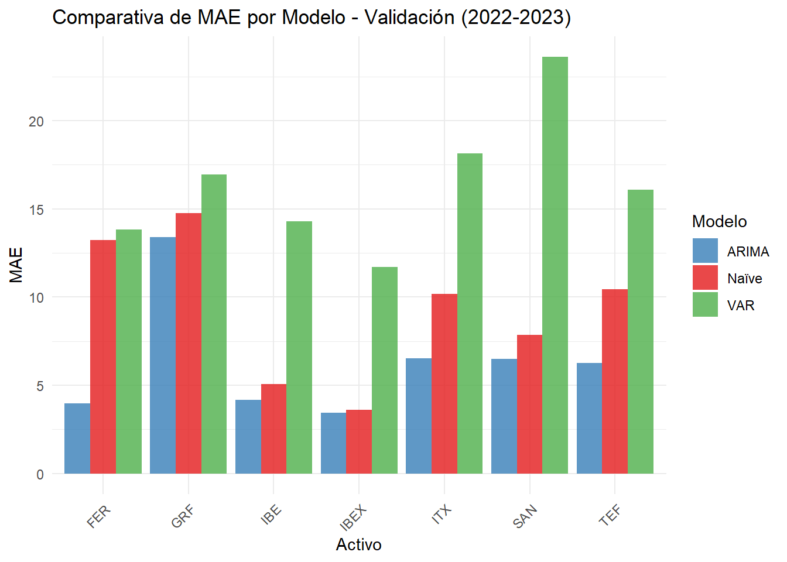
df_rmse_val <- data.frame(
Activo = comparativa_final_val$Activo,
Naïve = comparativa_final_val$RMSE_Naive,
ARIMA = comparativa_final_val$RMSE_ARIMA,
VAR = comparativa_final_val$RMSE_VAR)
df_rmse_val_long <- pivot_longer(df_rmse_val,
cols = c(Naïve, ARIMA, VAR),
names_to = "Modelo",
values_to = "RMSE")
ggplot(df_rmse_val_long, aes(x = Activo, y = RMSE, fill = Modelo)) +
geom_bar(stat = "identity", position = "dodge", alpha = 0.8) +
labs(title = "Comparativa de RMSE por Modelo - Validación (2022-2023)",
y = "RMSE", x = "Activo") +
scale_fill_manual(values = c("Naïve" = "#E41A1C", "ARIMA" = "#377EB8", "VAR" = "#4DAF4A")) +
theme_minimal() +
theme(axis.text.x = element_text(angle = 45, hjust = 1))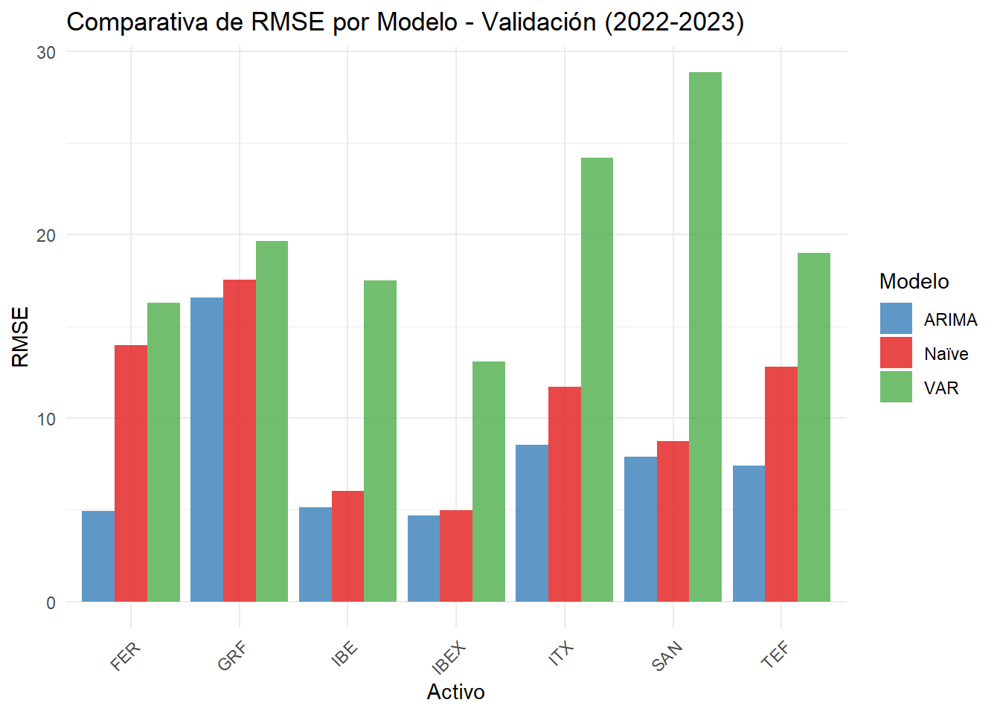
Gracias a ambos gráficos, es evidente que el mejor modelo
consistentemente ha sido ARIMA sobre Naïve y VAR. En especial, vuelve a
destacar Grifols como caso atípico, presentando los mayores errores en
los tres modelos, lo que sugiere factores idiosincráticos no capturables
mediante enfoques temporales convencionales. Donde naïve muestra cierto
poder predictivo, ARIMA ofrece mejoras marginales, mientras que en
series más volátiles, la ventaja de ARIMA resulta decisiva. El pobre
rendimiento de VAR indica que las interdependencias multivariantes no
aportan valor predictivo en este contexto.
Al haber definido ARIMA como el mejor modelo, se han escogido otra vez
Santander, Inditex y el IBEX 35 como representantes de cada perfil
definido para realizar las predicciones del año 2024.De esta manera,
tras crear las predicciones, se grafica el contraste entre la predicción
y la realidad, así como las métricas de RMSE y MAE, a las que se les
añade MASE (cuantificar capacidad predictiva ganada respecto al método
Naïve) y el ACF1 (conocer si la fórmula es válida si se calculan sus
intervalos de confianza).
activos_analizar <- c("IBEX", "ITX", "SAN")
resultados_arima_test <- list()
for(activo in activos_analizar) {
if(activo == "IBEX") {
df <- ibex_mensual} else {
df <- get(paste0(tolower(activo), "_mc"))}
col_retorno <- grep("log_return", colnames(df), value = TRUE)[1]
serie_completa <- na.omit(df[, col_retorno])
fechas <- index(serie_completa)
valores <- as.numeric(serie_completa)
fecha_corte <- as.Date("2024-01-01")
idx_train <- which(fechas < fecha_corte)
idx_test <- which(fechas >= fecha_corte)
train_vals <- valores[idx_train]
test_vals <- valores[idx_test]
test_fechas <- fechas[idx_test]
fit <- auto.arima(train_vals)
forecast_vals <- forecast::forecast(fit, h = length(test_vals))$mean
resultados_arima_test[[activo]] <- list(
datos = data.frame(
Fecha = test_fechas,
Real = test_vals,
Predicho = as.numeric(forecast_vals)),
modelo = arimaorder(fit))}
for(activo in activos_analizar) {
df_plot <- resultados_arima_test[[activo]]$datos
orden <- resultados_arima_test[[activo]]$modelo
p <- ggplot(df_plot, aes(x = Fecha)) +
geom_line(aes(y = Real, color = "Real"), linewidth = 1) +
geom_line(aes(y = Predicho, color = "Predicho"), linewidth = 1, linetype = "dashed") +
scale_color_manual(values = c("Real" = "blue", "Predicho" = "red")) +
labs(title = paste("ARIMA(", paste(orden, collapse = ","), ") - ", activo, sep = ""),
x = "Fecha", y = "Retorno Logarítmico (%)") +
theme_minimal()
print(p)}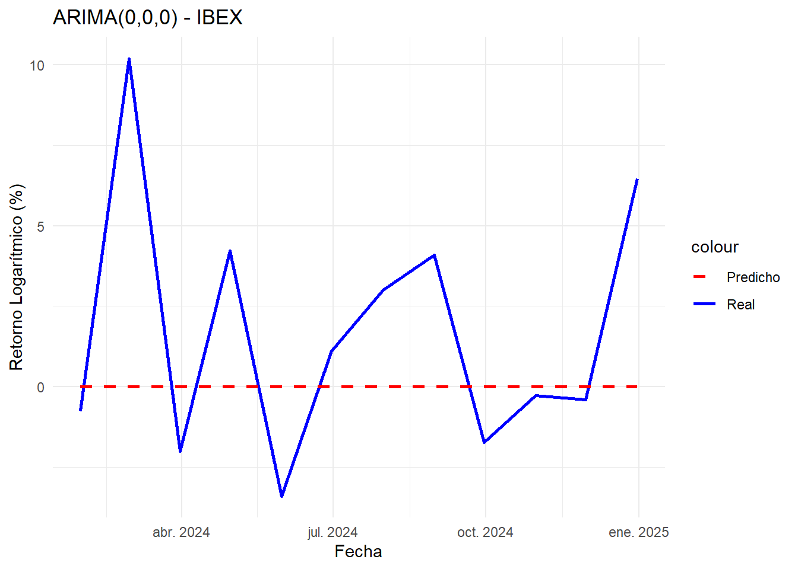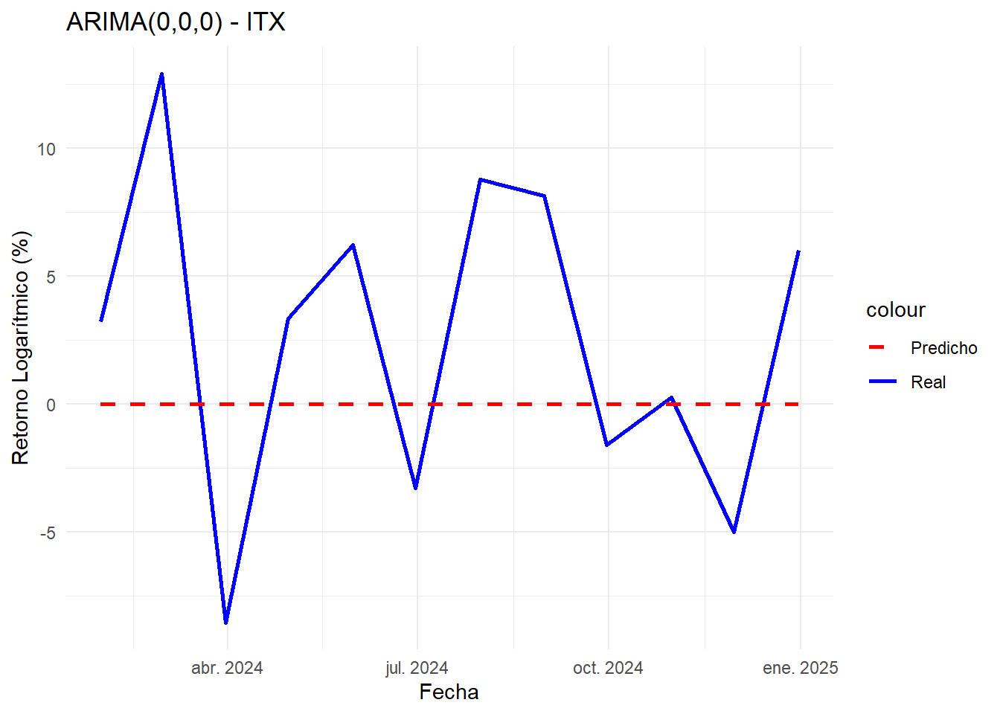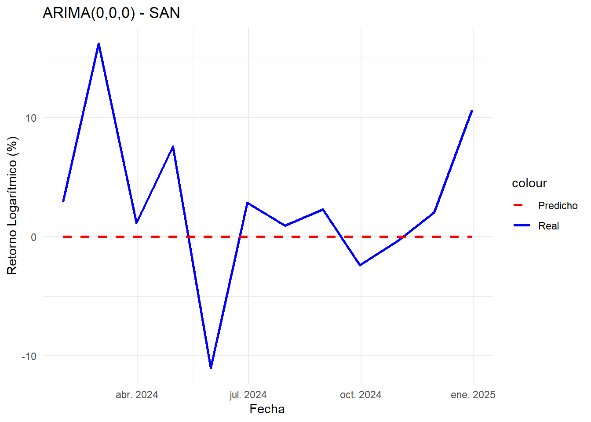
calcular_metricas_avanzadas <- function() {
metricas_avanzadas <- data.frame(
Activo = character(),
RMSE_Test = numeric(),
MAE_Test = numeric(),
MASE = numeric(),
ACF1_Residuals = numeric(),
Tasa_Mejora = numeric(),
stringsAsFactors = FALSE)
for(activo in c("IBEX", "ITX", "SAN")) {
if(exists("resultados_arima_test") && activo %in% names(resultados_arima_test)) {
datos <- resultados_arima_test[[activo]]$datos
modelo <- resultados_arima_test[[activo]]$modelo
errores <- datos$Real - datos$Predicho
rmse_test <- sqrt(mean(errores^2))
mae_test <- mean(abs(errores))
if(activo == "IBEX") {
df <- ibex_mensual
} else {
df <- get(paste0(tolower(activo), "_mc"))
}
col_retorno <- grep("log_return", colnames(df), value = TRUE)[1]
serie_completa <- na.omit(df[, col_retorno])
fechas <- index(serie_completa)
valores <- as.numeric(serie_completa)
fecha_corte <- as.Date("2024-01-01")
idx_train <- which(fechas < fecha_corte)
train_vals <- valores[idx_train]
naive_errors <- diff(train_vals)
mae_naive <- mean(abs(naive_errors))
mase <- ifelse(mae_naive > 0, mae_test / mae_naive, NA)
fit_temp <- forecast::auto.arima(train_vals)
acf1_residuals <- ifelse(length(residuals(fit_temp)) > 1,
acf(residuals(fit_temp), plot = FALSE, lag.max = 1)$acf[2],
NA)
tasa_mejora <- ifelse(!is.na(mase), 1 - mase, NA)
metricas_avanzadas <- rbind(metricas_avanzadas,
data.frame(Activo = activo,
RMSE_Test = rmse_test,
MAE_Test = mae_test,
MASE = mase,
ACF1_Residuals = acf1_residuals,
Tasa_Mejora = tasa_mejora))}}
return(metricas_avanzadas)}
metricas_completas <- calcular_metricas_avanzadas()
kable(metricas_completas,
caption = "Métricas ARIMA - Test Set (2024)",
digits = 3) %>%
kable_styling(bootstrap_options = c("striped", "hover")) %>%
column_spec(4, color = ifelse(metricas_completas$MASE < 1, "green", "red")) %>%
column_spec(5, color = ifelse(abs(metricas_completas$ACF1_Residuals) < 0.1, "green", "red"))| Activo | RMSE_Test | MAE_Test | MASE | ACF1_Residuals | Tasa_Mejora |
|---|---|---|---|---|---|
| IBEX | 4.181 | 3.136 | 0.525 | -0.107 | 0.475 |
| ITX | 6.575 | 5.615 | 0.630 | -0.120 | 0.370 |
| SAN | 6.991 | 5.017 | 0.457 | 0.003 | 0.543 |
En el test set, ARIMA se posiciona como el mejor modelo predictor, no
por capturar dinámicas temporales complejas, sino porque en ausencia de
autocorrelaciones significativas converge a una estrategia próxima a la
media incondicional. Los valores de MASE (>0.4) muestran una mejora
clara respecto al naïve, y los residuos con ACF1 <0.1 respaldan la
validez estadística del ajuste. En este contexto y período, los
resultados sugieren que los retornos se comportan de manera cercana a
ruido blanco, coherente con la hipótesis de eficiencia de mercados, lo
que hace que la media de valor 0 se convierta en una predicción difícil
de superar.
Tomando todo lo considerado hasta ahora, los resultados muestran que
ARIMA se posiciona como el mejor modelo entre los evaluados, no por
captar dinámicas complejas, sino porque en ausencia de autocorrelación
significativa converge a predicciones cercanas a cero. Este hallazgo es
coherente con las evidencias previas del EDA, donde ya se observaba
falta de estacionalidad y patrones débiles de dependencia temporal. Las
métricas de error (MASE < 1 y residuos sin autocorrelación) confirman
que, aunque la mejora frente a predictores naïve es moderada, ARIMA
ofrece la opción más robusta.